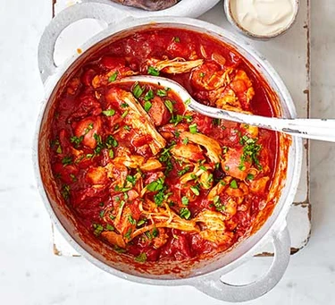

Banana Pancakes

A simple pancake recipe that uses bananas in place of eggs
This is a foolproof recipe that is a guaranteed crowd pleaser. They are egg free, and suitable for vegitarians. These pancakes can easily be made vegan by replacing to milk for a dairy-free alternative.
These pancakes are even easier to make if you have a blender! Simply add all the incredients and blend.
Ingredients
- 1 large ripe banana (around 150g)
- 2 tbsp golder caster sugar
- 1/4 tsp fine salt
- 2 tbsp vegetable oil, plus extra for cooking
- 120g self-raising flour
- 1/2 tsp baking powder
- 150ml milk (or suitable dairy alternative)
- Toppings of your choice to serve (optional)
Steps
- Mash the banana in a mixing bowl
- Stir in the sugar, salt and oil
- Add the flour and baking powder
- Make a well n the centre and gradually whisk in the milk
- Head a little oil in a frying pan over a medium heat
- Add 2tbsp of the batter to make American-style pancakes
- Fry on each side for 2-3 mins until golden
- Serve with your choics of toppings